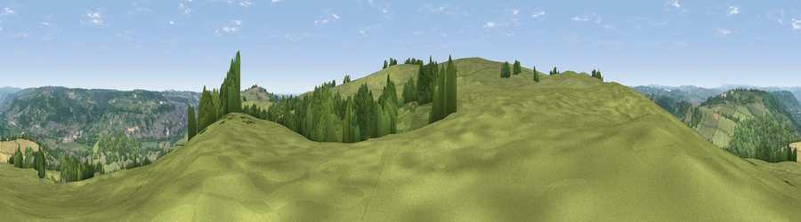

Viewpoint near Wensley
#13971 in England · top 12% of its area beats it · near Wensley · path 84 mWhere it is
The exact computed spot (SK 25875 60075). Click the marker for map links.
Public access: the nearest public right of way is about 84 m away — the final stretch may cross private land. Computed from Natural England's CRoW access layer and OpenStreetMap rights of way — not the legal definitive map. Always verify locally.
The view, rendered

A 360° render of this exact spot computed from the terrain model, tree cover and land cover — summer colours, afternoon light, calibrated against photographs of famous viewpoints. Real trees, hedges and buildings will differ in detail.
The panorama
Grey silhouette: terrain skyline in each direction (720 bearings, Earth curvature and refraction included). Dashed green: skyline with trees (+15 m) and buildings (+8 m) as obstacles. Blue strip: how far the ground is visible on each bearing.
Where the view opens
Wedge length = distance to the farthest visible ground on that bearing (vegetation-aware). Rings at 10, 25 and 50 km.
What fills the view
62% grassland · 30% woodland · 4% built-up · 4% cropland
Angular shares of the visible panorama (visual magnitude), not map area. Landscape diversity 0.40 (0–1 Shannon).
Key numbers
More beautiful places nearby
The staircase of upgrades: each row has a higher view potential than everything closer. Driving times are estimates from straight-line distance, calibrated against real road routing — check an actual route before setting out.
| Place | Direction | Drive | Score |
|---|---|---|---|
| Viewpoint near Winster | W · 1 km | ~3 min | 61.0 |
| Masson Hill | ESE · 3 km | ~7 min | 65.7 |
| Viewpoint near Middleton | SSE · 4 km | ~10 min | 66.4 |
| Harboro Rocks | SSW · 5 km | ~11 min | 66.7 |
| Viewpoint near Wirksworth | SE · 6 km | ~13 min | 70.0 |
| Alport Height | SSE · 10 km | ~19 min | 73.9 |
| Tissington Hill | SW · 13 km | ~24 min | 75.5 |
| Viewpoint near Mow Cop | W · 40 km | ~59 min | 78.9 |
53.13721, -1.61468 · source: screening · position refined by local search. Computed location — check access rights before visiting.